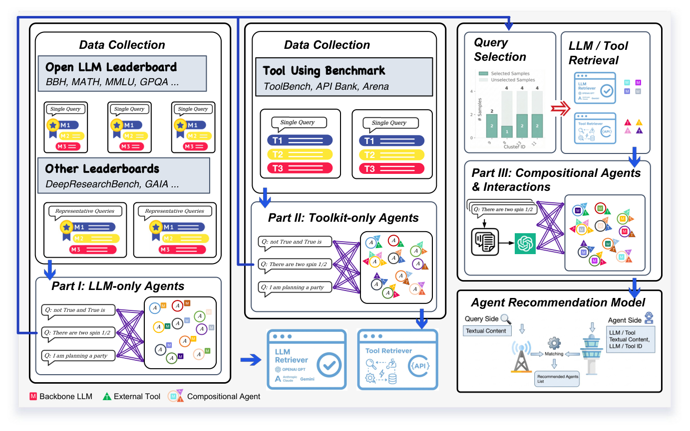

AgentSelect: Benchmark for Narrative Query-to-Agent Recommendation (面向叙事查询到智能体推荐的基准)
- 会议/期刊: ICML 2026
- 作者与机构: Yunxiao Shi, Wujiang Xu, Tingwei Chen 等；University of Technology Sydney / Rutgers University 等
- 推荐链路定位: 召回（查询到智能体配置的 Top-k 检索排序）
- 研究方向: 对话推荐与智能体仿真 / 冷启动与长尾推荐
- 论文原文: https://arxiv.org/abs/2603.03761v2
- 开源代码: https://github.com/Ancientshi/AgentSelect
TL;DR (1分钟核心速览)
LLM 智能体生态爆发，但"给定自然语言任务，该选哪个可部署智能体配置"缺乏查询级监督信号。本文提出 AgentSelect，把 40+ 异构评测产物（LLM 榜单、工具基准）统一重构为"叙事查询→智能体"的正样本隐式反馈基准：111,179 条查询、107,721 个可部署智能体、251,103 条交互。核心发现是监督分布从稠密头部复用转向长尾近一次性，ID 类 CF/GNN 方法在 Part II/III 崩塌（LightGCN nDCG 仅 0.0000），而显式 TF-IDF 双塔在 Part III 达 nDCG@10=0.8427，并在真实市场 MuleRun 上迁移提升 nDCG@10 从 0.7462 到 0.8216。
Background & Motivation (背景与核心矛盾)
- 主流范式: 现有 LLM 榜单（Open LLM Leaderboard）与工具基准（ToolBench、ToolHop）在组件级孤立评测模型或工具，RouterBench/RouterEval 做 LLM 路由，ToolRet 做工具检索。
- 前人局限: ① 评测产物任务、指标、候选池高度异构，只能作诊断终点，无法复用为训练监督；② 路由与工具检索各自缩小搜索空间，没有对完整 \((M,T)\) 配置的查询条件化偏好，无法学习端到端排序器。
- 核心洞察 (Key Insight): 智能体选择本质是"叙事意图→能力画像"的匹配问题，且真实市场中智能体近乎一次性被选中（长尾），ID 共现信号天然稀疏。
- 本文切入点: 把每个智能体抽象为可执行能力画像 \(A=(M,T)\)（骨干 LLM + 工具集，YAML 可实例化），将异构评测结果统一转写为正样本查询-智能体交互，构建首个智能体推荐基准。
Method (核心方法设计)
1. 整体框架 (Overall Architecture)
AgentSelect 分三部分构建监督：Part I（仅 LLM）从 Open LLM Leaderboard 的查询粒度评测取每查询 Top-10 模型为正样本（4,426 模型过滤为 173 个知名机构模型），数据集粒度结果则经覆盖均衡 coreset 采样转为任务级弱监督；Part II（仅工具）从工具基准中取查询所需参考工具集，骨干置空以隔离工具贡献；Part III（组合式）用 Parts I/II 训练的两个轻量检索器分别召回骨干与工具候选，经 LLM 辅助合成与校验生成 \((M,T)\)伪正样本。最终在统一特征下训练排序器，输出\(\hat{R}_k(Q)=\text{Top-}k(\{s(Q,A):A\in\mathcal{A}(Q)\})\)。
flowchart TD
A["40+ 异构评测产物<br/>LLM榜单/工具基准"] --> B["Part I 仅LLM<br/>Part II 仅工具"]
B --> C["Part III 组合式合成<br/>检索器召回+LLM校验"]
C --> D["统一正样本交互<br/>111K查询/107K智能体"]
D --> E["排序器训练<br/>TF-IDF双塔/CF/GNN/生成式"]
E --> F["Top-k 智能体配置推荐"]
2. 关键设计拆解 (Key Designs)
-
能力画像与可执行 YAML 抽象：痛点是把智能体当抽象标签无法部署。本文将智能体存为 \((M,T,C)\)的 YAML，但仅以能力核心\((M,T)\)作为监督目标，\(C\)（提示、记忆、解码参数）视为框架相关的受控运行时设置。直觉：\((M,T)\) 是跨框架最稳定的"智能体能做什么"抽象，保证推荐结果可直接在 Agno/LangGraph 中实例化。
-
组合式伪正样本的三阶段合成（Part III）：Parts I/II 训练的信号碎片化在 \(M\)与\(T\) 两侧，缺少完整配置的直接交互。本文先对查询做 facet 分解以暴露细粒度工具需求，聚合检索工具短名单，再与骨干短名单组合成查询专属候选池，最后由 LLM 校验器筛出满足能力需求的配置作为伪正样本。关键在于不把笛卡尔积全部标正，避免噪声爆炸。
-
训练目标与推理效率：采用正样本隐式反馈范式（BPR 类 pairwise 排序损失），无显式负采样，未观测即未标注。推理为双塔内积检索，TF-IDF 稀疏特征使查询与智能体编码开销极低，适合大规模目录的 ANN 召回。
Experimental Setup & Evaluation Protocol (实验设置与评估协议)
- 数据集与预处理:
| 数据集 | #Queries | #Agents | #Interactions | 拓扑特征 | 场景说明 |
|---|---|---|---|---|---|
| Part I (LLM-only) | 23,073 | 231 | 45.9% 正样本 | 稠密头部复用 | 骨干模型选择 |
| Part II (Toolkit-only) | 76,197 | 47,949 | 30.3% 正样本 | 稀疏长尾 | 工具集匹配 |
| Part III (Compositional) | 11,909 | 59,541 | 23.7% 正样本 | 近一次性 | 完整 \((M,T)\) 配置 |
| 合计 | 111,179 | 107,721 | 251,103 | 长尾 | 12,099 个唯一工具 |
- 数据划分与防穿越: 比例划分 8:2（train:test），非时间切分；Part III 验证集含大量未见智能体，构成天然冷启动检验。
- 排名评测协议: 全库候选排序（各 Part 内全智能体目录），报告 Precision/Recall/F1/nDCG/MRR@10；正样本数 Part I 取 Top-10、Part II 取 Top-1、Part III 取 Top-5。
- 对比基线与超参: 六大类共 20+ 基线——隐因子（MF、LightFM）、内容神经（DNN、TwoTower，特征含 TF-IDF/BGE-M3/BERT）、图传播（NGCF、KGAT、LightGCN、SimGCL）、嵌入检索重排（BGE-Rerank、KaLM-v2.5、EasyRec，含 in-domain 微调版
*）、智能体推荐（AgentRec）、生成式（GenRec）。统一特征：查询/模型/工具内容 + 模型 ID + 工具 ID；图方法额外加智能体 ID，查询 ID 用 TF-IDF 检索 \(N=3\) 近邻均值近似。
Key Experimental Results (实验关键数据)
1. 主实验对比 (Main Results)
| 方法 | Part I nDCG@10 | Part II nDCG@10 | Part III nDCG@10 | Part III MRR@10 |
|---|---|---|---|---|
| MF | 0.3094 | 0.0977 | 0.0547 | 0.0802 |
| LightFM | 0.3643 | 0.4776 | 0.1422 | 0.1610 |
| DNN (TFIDF) | 0.3320 | 0.6696 | 0.2975 | 0.3090 |
| TwoTower (TFIDF) | 0.4422 | 0.9663 | 0.8427 | 0.9005 |
| LightGCN | 0.8820 | 0.3037 | 0.0000 | 0.0001 |
| NGCF | 0.9045 | 0.0755 | 0.0006 | 0.0003 |
| KaLM-v2.5* | 0.2787 | 0.8859 | 0.8116 | 0.8352 |
| EasyRec* | 0.2708 | 0.8552 | 0.6320 | 0.6501 |
| GenRec | 0.9404 | 0.5407 | 0.2780 | 0.3509 |
Part I 上 GenRec（0.9404）与图方法（NGCF 0.9045）领先；但 Part II/III 上二者全面崩塌，TwoTower (TFIDF) 以 0.9663/0.8427 反超所有基线，相对次优 KaLM-v2.5* 在 Part III 提升约 3.8%。
2. 消融实验 (Ablation Study)
Part III 上 TwoTower (TF-IDF) 的特征消融（Top@10）：
| 设置 | LLM内容 | 工具内容 | LLM ID | 工具 ID | nDCG@10 | MRR@10 |
|---|---|---|---|---|---|---|
| 全模态 | ✓ | ✓ | ✓ | ✓ | 0.9344 | 0.9453 |
| 去 LLM ID | ✓ | ✓ | ✗ | ✓ | 0.6162 | 0.6709 |
| 去工具 ID | ✓ | ✓ | ✓ | ✗ | 0.5903 | 0.6358 |
| 去全部 ID | ✓ | ✓ | ✗ | ✗ | 0.6071 | 0.6565 |
| 仅 ID | ✗ | ✗ | ✓ | ✓ | 0.5744 | 0.6300 |
| 仅工具 ID | ✗ | ✗ | ✗ | ✓ | 0.6040 | 0.6607 |
| 仅 LLM ID | ✗ | ✗ | ✓ | ✗ | 0.0857 | 0.1612 |
3. 关键实验发现 (Key Findings)
- ID 信号在稠密复用下有效、一次性监督下失效：Part I 中 NGCF/LightGCN 达 nDCG 0.90+，但 Part II/III 骤降至 0.0006/0.0000；图 5 显示加入 AgentID 反而损害 MF/LightFM/DNN 在 Part II/III 的表现，因验证智能体大量未见，身份嵌入遭遇冷启动。TwoTower 是唯一例外——共享检索空间中 AgentID 帮助区分内容相似的智能体而非记忆流行度。
- 显式稀疏特征胜过稠密预训练编码器：TwoTower (TF-IDF) 全面优于 BGE-M3 版（Part III nDCG 0.8427 vs 0.8268）与端到端微调 DNN (BERT*)（0.1797）。原因是智能体能力描述含模型名、工具名等高判别性词法线索，TF-IDF 恰好捕获。
- 内容与 ID 互补且工具 ID 主导：全模态 nDCG 0.9344，去 ID 后跌至 0.6071，仅 ID 仅 0.5744；其中仅工具 ID 达 0.6040 而仅 LLM ID 仅 0.0857，说明工具身份携带远强于骨干身份的任务判别信息。Part III 伪正样本可学习性验证：I+II 训练在 Part III 仅 0.1329，加入 Part III 后跃升至 0.8427（+534%），且反事实编辑下移除关键工具/添加无关工具均产生方向正确的分数下降（一致性 64%/84%）。
Highlights & Limitations (亮点、对比与审稿批判)
- 与代表作对比 (vs. Prior Work): 相比 RouterBench/RouterEval 仅做 LLM 路由、ToolRet 仅做工具检索，本文首次将二者统一为完整 \((M,T)\) 配置的查询条件化排序；相比 Agent4Rec/iAgent 等用户中心智能体推荐，本文是单次叙事查询匹配而非长程用户偏好建模，故 AgentRec 叠加 KaLM* 几乎无增益（0.8118 vs 0.8116）。
- 可迁移亮点: ① "异构评测产物→统一正样本交互"的转写范式可迁移到任何缺乏查询级监督的新兴物品域；② 能力画像 \((M,T)\) + YAML 可执行化设计，使推荐结果直接落地为运行时配置。
- 审稿级局限批判: ① Part III 伪正样本由 LLM 校验而非真实执行产生，仅验证了"合理性"而非全局最优，且 I+II+III 联合训练使 Part I nDCG 从 0.3399 升至 0.4422 但 Part II 略降 1.11%，存在监督分布冲突；② 评估完全基于离线 IR 指标，未穷举执行推荐配置，端到端验证仅 200 查询、Top-5 短名单内排序（Top-1 匹配率 0.364），绝对增益有限。
Rating (四维评分)
- 方法创新性 (Novelty): ⭐⭐⭐⭐ （首个将智能体选择重构为查询到能力画像推荐的基准，任务定义与数据转写范式新颖，但排序模型本身为常规双塔）
- 评估协议与实验扎实度 (Protocol & Experiments): ⭐⭐⭐⭐ （20+ 基线覆盖六大范式、三部分分层评测、反事实与可学习性验证完整，但缺执行级端到端大规模验证）
- 写作与数学规范度 (Clarity & Rigor): ⭐⭐⭐⭐ （任务形式化与数据构建流程清晰，公式简洁；部分附录细节与主文符号衔接略松散）
- 工业落地与复现价值 (Industrial & Practical Value): ⭐⭐⭐⭐⭐ （数据与代码开源、YAML 可直接实例化、MuleRun 真实市场迁移验证 nDCG@10 提升 10%，工程价值突出）